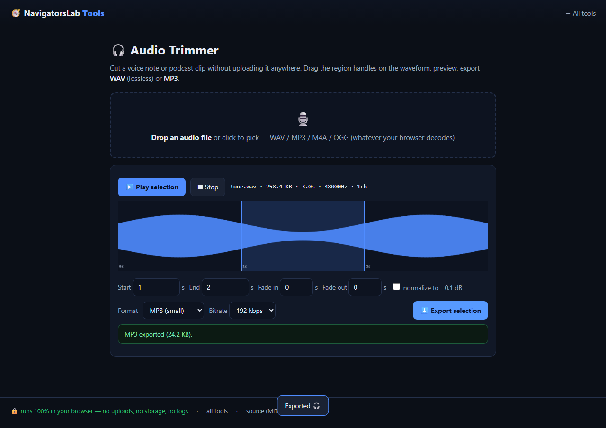

Audio Trimmer
Cut voice notes and clips on a waveform
🆓 free & open source (MIT)🔒 nothing is uploaded📶 works offline📱 mobile friendly
🔊 Narrated Step-by-Step Usage Tutorial Video (40s)
📖 Detailed Step-by-Step User Guide
Step 1: Drop a Voice Note, Podcast Clip, or Song · [Audio Dropzone (#dz)]Drag and drop an audio file (`.wav`, `.mp3`, `.m4a`, `.aac`, `.ogg`, `.flac`) onto `#dz`.✓ Result: Web Audio API decodes the audio buffer locally and renders the full waveform canvas (`#wave`).
Step 2: Inspect the Waveform & Select Start / End Times · [Waveform Canvas (#wave) & Time Inputs (#t0, #t1)]Drag the left and right trim handles on `#wave` or type millisecond-accurate timestamps into **Start (`#t0`)** and **End (`#t1`)**. Click **Preview selection** to listen to the cut.✓ Result: Exact sample boundaries are locked in with live duration readout.
Step 3: Add Smooth Fade-In / Fade-Out & Pick WAV or MP3 · [Fade Controls & Format Selector (#fmt)]Configure fade-in/fade-out durations and select `wav` (uncompressed 16-bit PCM) or `mp3` (encoded via self-hosted `lamejs`) in `#fmt`.✓ Result: Envelope and encoder settings are ready for local rendering.
Step 4: Click Export Trimmed Audio · [Export Button (#exp)]Click **Export (`#exp`)**. The browser slices the PCM buffer, applies fade envelopes, encodes to WAV or MP3 via `lamejs`, and downloads the file.✓ Result: Sample-accurate `.wav` or `.mp3` clip saved locally in under a second.
🎛️ UI Controls & Shortcuts Reference
Waveform Canvas (`#wave`)— Interactive peak visualization for dragging trim start and end handles.Start (`#t0`) & End (`#t1`) Inputs— Numeric inputs (in seconds) for exact sample-accurate trimming.Output Format (`#fmt`)— Switch between 16-bit PCM `.wav` and self-hosted LAME `.mp3` encoding.Export Button (`#exp`)— Renders and downloads the trimmed audio clip.
💡 Pro Tips & Real-World Workflows
- Apply a `0.05s` to `0.15s` fade-in and fade-out when cutting spoken voice notes to eliminate zero-crossing pops at the start and end of the clip.
- Choose `WAV` when exporting clips for video editors (Premiere, DaVinci Resolve, CapCut) and `MP3` when sharing voice notes over email or chat.
- Because decoding and LAME MP3 encoding happen entirely in your tab, confidential interview recordings never touch a cloud transcription server.
⚡ Concrete Example: Input → Engine → Output
1 · Raw Input
40-Minute Interview Voice Note (voice-memo.wav)
Needs exact 01:12.40 – 01:44.80 highlight clip with smooth fade-in/out and normalized volume
2 · On-Device Engine
Web Audio API sample-accurate waveform slice + linear gain ramps + peak normalization + self-hosted LAME MP3 encoder
Runs locally under strict Content-Security-Policy with zero network uploads.
3 · Verified Output
interview-clip-normalized.mp3 (or .wav)
32.4s clip at -0.1 dBFS peak, 0.5s fade-in/out, valid ID3/MPEG frame sync encoded entirely in-tab
Slice: 1.00s..2.50s (66,150 samples) | Peak: 0.99 | Export: WAV PCM + LAME MP3 (0xFFFB) [OK]

Audio Trimmer mid-task — this demo runs entirely on this page's own GitHub Pages site.
What it does
- Trim voice notes and clips with sample-accurate precision on a waveform
- Fade in/out and one-click peak normalize
- Export WAV or MP3 (self-hosted LAME) — 100% offline
How it works
- Step 1. Drop a voice note
- Step 2. Drag the selection on the waveform, add fades
- Step 3. Export WAV or MP3
Private by design. Files are processed on your device and never
sent to any server. No accounts, no tracking, no cookies, nothing retained. Prefer the hub?
The same tool lives at https://navigatorslab.com/tools/audio.html.
The suite: 24 projects, one zero-upload promise
🛡 Photo Privacy KitStrip GPS, camera model and timestamps before posting
🔐 Password Breach CheckerHas this password been breached? — it never leaves your tab
🔍 Metadata & Hidden-Data CheckerSee what's really inside a file — then strip it
🗜 Image ShrinkerHit “max 2 MB” portal limits without TinyPNG
📄 Scan & Screenshot CleanerPhone photos of documents → clean, straight PDFs
✍ Local E-Sign PadSign this lease tonight — not DocuSign
🧾 Receipts → One PDFShoebox of receipt photos → one date-sorted PDF
🔢 Receipt OCR → CSVRead totals off receipt photos, export for expenses
🔳 QR StudioGenerate QR codes and decode QR images — no site sees them
🧮 Invoice / Quote GeneratorOne-person shops: hours in, clean PDF out
🗂 Batch Rename & SortIMG_5847.jpg → 2026-09-05-receipt-home-depot.jpg
🖨 Print-Shop PrepExact sizes, bleed, DPI checks, print-ready PDF
📑 PDF PagesReorder, rotate, delete and extract PDF pages
🔬 Text DiffCompare two texts with word-level highlights
🎨 ReimagineRedesign any HTML page from its own content
📊 Text StatsWords, reading time, readability, keyword density
📜 PDF StudioEdit the text inside your PDF — private, free, open source
🩺 Design Health18 deterministic design-quality checks for HTML — no LLM, no API key
🔪 Skill SliceCopy one Read-verified skill folder — a slice, not the pie
🕵 liecatchersYour agent said Done. Prove it — ten sensors, one RECEIPT.json
📚 Book Guide MCPShip improvements with your books — agents cite, run playbooks, learn
📡 Data InsightsFounder intelligence — daily & weekly tech signal briefs
🪓 Iron Axe: LegacyAn original side-scrolling beat 'em up — Godot 4